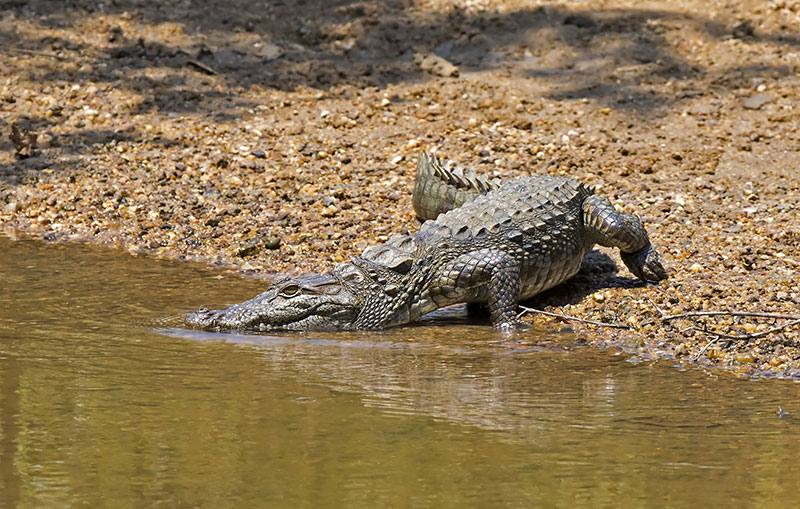

Introduction
Welcome to the lush wilderness of Wilpattu National Park (WNP). Ranging over 131 thousand hectares, it is Sri Lanka’s largest and one of the oldest protected areas. The park consists of five blocks declared between 1938-1973 under the Fauna and Flora Protection Ordinance and is managed by the Department of Wildlife Conservation.
WNP spans across the Puttalam and Anuradhapura districts, and borders the Mannar and Vavuniya Districts. The area is one of the most important elephant habitats in the country and is also a great place to observe the elusive Sri Lankan leopard and the sloth bear.
This park has a denser forest cover unlike many other National Parks in Sri Lanka. WNPs landscape comprises of dry zone forests and thorny scrub interspersed with extensive open plains, sand dunes and the unique Villu wetlands. Bare reddish cliffs rising abruptly from narrow beaches of the Portugal Bay and Dutch Bay are another striking feature of its landscape.(dwc, 2023)
Species

This sub species is much smaller than the Indian Sloth Bears and are encountered throughout the park, but Maradanmaduwa area is especially noted for their abundance. These black furred bears are omnivores, feeding primarily on termites and berries and is seen as a classic example of an ecological relationship between the most dominant tree species (Manilkara hexandra and Vitex sepiria) at the park and one of the larger mammals in Sri Lanka. The bears are very fond of the fruits of these two trees.(dwc, 2023)
Of the two crocodile species found in Sri Lanka, the Mugger or Marsh Crocodile is very common in the park. These reptiles are seen regularly on the banks of villus and tanks with their mouths wide open. This basking technique is to regulate the temperature of their bodies through heat dispersal.(dwc, 2023)